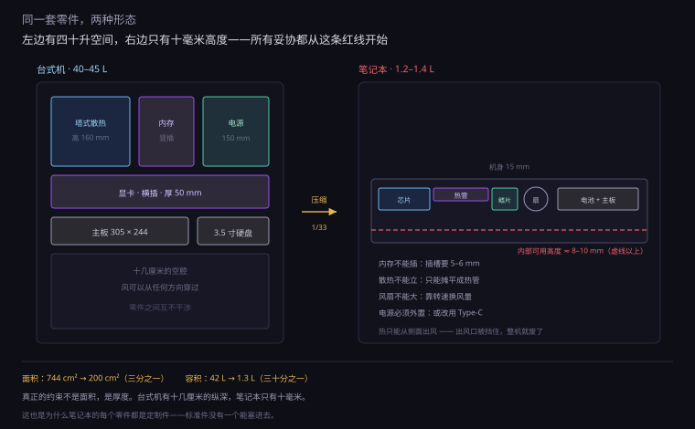
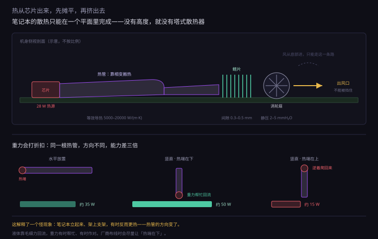
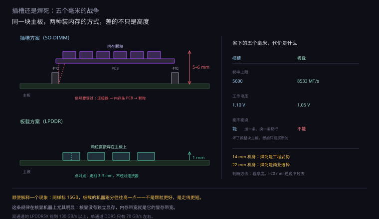
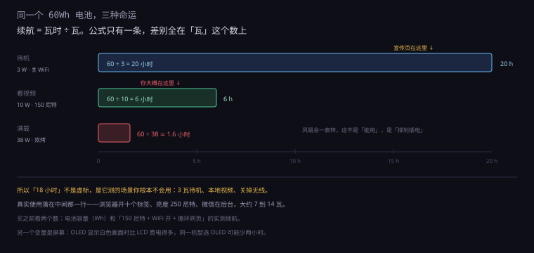
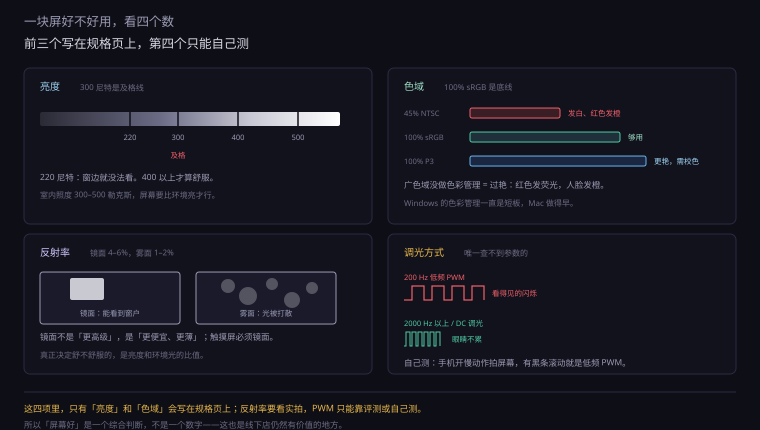
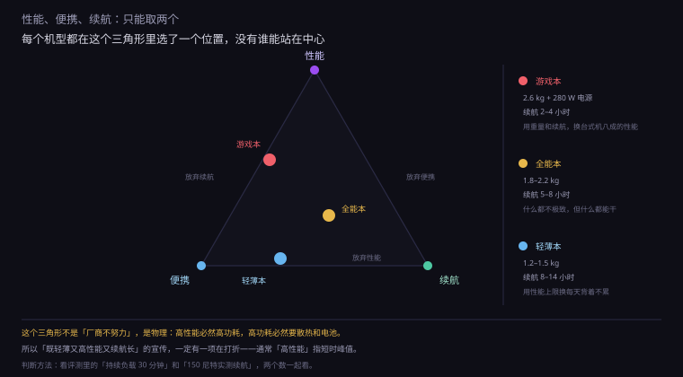
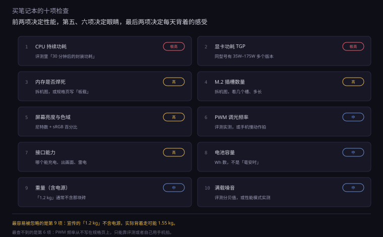

约 1.1 万字 · 7 张图 · 读完你能看清一台笔记本的钱花在哪、 为什么同型号不同机器差一倍、以及哪些「缩水」其实是没办法
先做一个粗略的对比。一台中塔台式机，机箱容积大约 40 到 45 升； 一台 14 寸轻薄本，机身容积大约 1.2 到 1.4 升。 差三十多倍。而它们的计算能力，在同一价位上并不是三十倍的关系。
更具体的对比在主板上。一块标准 ATX 主板是 305 × 244 毫米， 面积约 744 平方厘米； 一台 14 寸轻薄本的主板，面积通常在 180 到 220 平方厘米之间。 也就是说，笔记本要在四分之一的面积上，放下一整套系统。
但真正的约束不是面积，是厚度。
台式机的主板到侧板之间有十几厘米，什么都能立起来： 内存条竖着插（高 3 厘米）、显卡横着插（厚 5 厘米）、 塔式散热器立着（高 16 厘米）、电源是一个 15 厘米的方块。 笔记本的机身厚度是 14 到 16 毫米，扣掉外壳、键盘、屏幕， 内部可用高度只剩 8 到 10 毫米。
这个数字决定了几乎一切：
所以笔记本不是「把台式机的零件做小」，而是「在厚度这一个维度上， 把所有零件重新设计一遍」。这件事的代价，后面几节会一笔一笔算。

台式机产业链的关键词是标准。 ATX 主板、DDR5 内存、M.2 固态、PCIe 插槽、SFX 电源—— 每一个都有公开的尺寸规范和电气规范，任何厂家都能做， 任何一件都能插到别家的主板上。
这种标准化的好处是规模：一条内存生产线可以给全世界供货， 摊到每一颗上的研发成本几乎为零。 所以你花三百块就能买到一条 16GB 的 DDR5——因为它一年卖几千万条。
笔记本不是这样。它的主板是为这一款机身单独画的： 形状要贴合外壳，接口位置要对准开孔，散热器固定孔要对准主板， 电池形状要填满剩下的空间。 换一个机型，主板就得重画。
这就是笔记本贵的第一个原因，也是最容易被忽略的一个： 它没有规模效应。 一款笔记本的生命周期销量，好的是几十万台，差的几万台； 而一块台式机主板，一个型号能卖几百万片。 研发成本除以销量，每一台上摊到的钱差一个数量级。
压缩带来的不只是「变小」，还有零件之间被迫耦合。 台式机的每个件都是独立的：CPU 有自己的散热器、显卡有自己的风扇、 内存有自己的通道。笔记本做不到。
一、共享散热。轻薄本常常只有一根热管， 同时覆盖 CPU 和显卡（或者核显所在的 SoC）。 一个热了，另一个也跟着热。 所以「CPU 满载时显卡降频」在轻薄本上是常态，不是故障。
二、共享功耗预算。整机有一个总功耗上限（由电源适配器决定）， CPU 和 GPU 要从这个池子里分。谁分得多，另一个就少。 这个分配是动态的，由厂商的固件决定。 这就是为什么「双烤」的分数总比「单烤 CPU + 单烤 GPU」加起来低。
三、共享内存带宽。核显没有自己的显存，它用的是系统内存。 CPU 和核显抢同一条内存总线。 所以核显机器「加内存」的收益比独显机器大得多—— 不只是容量，还有双通道带来的带宽翻倍。
这三件事在台式机上几乎不存在，在笔记本上是设计的前提。 后面每一节的妥协，追到底都是这三条。
这是笔记本最容易被误解的一件事： 同样是「i7」或者「Ryzen 7」，装在两台笔记本里，性能可以差一倍。
不是型号造假，是功耗墙不同。
Intel 的移动 CPU 有两个功耗限制：
AMD 那边叫 TDP 和 PPT（Package Power Tracking）， 意思一样：一个长期、一个短时上限。
厂商在 BIOS 里设这两个数。设多少，取决于这套散热能压住多少。 同一颗芯片，塞进 14 毫米的机身，PL1 定 20W； 塞进 25 毫米的游戏本，PL1 可以定到 55W。 后者跑分高 60%，但它们的 CPU 型号可能只差一个字母。
这里有一个很凶的物理关系，值得算一次。
芯片的动态功耗是 P = C × V² × f（C 是等效电容，V 是电压，f 是频率）。 而为了维持高频下的时序，电压必须跟着频率一起提高—— 大致上 V 与 f 近似线性。代进去：
P ∝ f³
也就是说，频率降一半，功耗降到八分之一。这个关系解释了笔记本的一切。
举个具体的：一颗能在 65 瓦下跑 4.5 GHz 的芯片， 如果限制到 15 瓦，功耗是原来的 23%，频率大约是原来的 23% 的三次方根，也就是 0.61 倍——约 2.75 GHz。
性能掉了 39%，功耗掉了 77%。 「用 23% 的电，换 61% 的性能」——这就是笔记本的能效账本。
| 功耗墙 | 大致频率 | 相对性能 | 典型机身 |
|---|---|---|---|
| 15 W | 2.6 – 2.9 GHz | 约 60% | 无风扇或单风扇超轻薄本 |
| 28 W | 3.2 – 3.5 GHz | 约 75% | 主流轻薄本 |
| 45 W | 3.8 – 4.0 GHz | 约 88% | 全能本、创作本 |
| 65 W | 4.4 – 4.6 GHz | 100% | 厚游戏本、台式机 |
注意这张表里的「相对性能」不是线性下降的： 从 15W 到 28W，功耗涨 87%，性能只涨 25%；从 28W 到 45W，功耗涨 61%，性能涨 17%。 越往上越不划算。这就是为什么厂商愿意把轻薄本定在 28W 而不是 45W—— 多给 17 瓦的热，只换 17% 的性能，但风扇要吵一档、续航要少一小时。
评测里有一个词叫「双烤」：CPU 和 GPU 同时满载， 跑 30 分钟以上。它测的不是峰值，是「这套散热和这个电源，能同时喂饱两个热源多久」。
一台标称「CPU 55W + GPU 140W」的游戏本，双烤时常见的结果是 CPU 45W + GPU 115W，加起来 160W。 为什么不是 195W？因为电源适配器只有 180W，还要留 20W 给屏幕、内存、硬盘。
厂商的做法叫动态功耗分配（NVIDIA 叫 Dynamic Boost，AMD 叫 SmartShift）： 固件实时看谁的负载更重，把预算挪过去。 跑游戏时 GPU 吃紧，CPU 就让出 15 瓦；跑渲染时 CPU 吃紧，GPU 就让。 所以「标称 55W」在日常使用里可能一直是 35W——不是虚标，是它在让。
这也解释了一个购买时的判断： 看电源适配器的功率，比看 CPU/GPU 的标称功耗更能反映真实能力。 230W 的电源，整机峰值就是 230W，两个热源加起来不可能超过它。 配 135W 电源却号称「满血显卡」的机器，一定在某个地方打了折。
上一节说 28W 的机身只能散 28W。这一节说，这 28W 是怎么走出去的。
台式机的散热路径是「一条直线」：芯片 → 顶盖 → 硅脂 → 散热器底座 → 热管 → 鳍片 → 风扇 → 机箱 → 房间。方向明确，每一段都有足够的空间。
笔记本的路径是「先摊开，再挤出去」，而且只能在一个平面里完成。
热管是一根封了少量工作液体（通常是水或乙醇）的铜管，内壁烧结了一层铜粉， 形成无数细小的毛细孔。工作过程是这样一个循环：
关键在于第 1 步和第 3 步：相变吸收和放出的热量， 比单纯用金属导热大得多。 一根烧结热管的等效导热系数能到 5000 到 20000 W/(m·K)， 而纯铜只有 400。差一个数量级以上。
所以「用铜块把热从 CPU 导到鳍片」这件事，靠实心铜是做不到的—— 一米长的铜棒，传 30 瓦会烫得没法摸；同样长度的一根热管，几乎不升温。
热管里的液体靠毛细力回流，而重力有时候帮它、有时候害它。
热端在下方（液体靠重力也能回去）时，传热能力最强，叫「重力辅助」； 热端在上方（液体要逆着重力爬回去）时，能力会掉—— 一根 6 毫米的热管，水平放置大约能传 30 到 40 瓦， 倒过来（热端在上）可能只剩一半。
这就解释了一个很具体的现象：有些笔记本平放在桌上温度正常， 立起来或者放在支架上反而更热。 因为热管的方向变了。还有些机器底部进风口被挡住时， 不只是「风少了」，热管的工作状态也变差了。
高端轻薄本会用均热板（vapor chamber）代替热管。 原理一样，但形态不同：不是一根管，而是一个扁平的金属腔， 内部同样有毛细结构，蒸汽在整个腔体里扩散。
好处是把热从「一条线」摊成「一个面」。 CPU 和 GPU 挨在一起时，热管只能一根根接过去， 而均热板可以直接覆盖两个芯片，让热量自然摊平。 代价是贵、厚（通常 0.6 毫米以上）、而且不能被压变形—— 一旦腔体塌了，那一块就变成了实心铜，效果大打折扣。
笔记本里绝大多数用的是涡轮扇（blower，也叫离心扇）： 风从轴向吸进来，被叶片甩到侧面，从一个小小的出风口吹出去。
为什么不用台式机那种轴流扇？因为笔记本要的是「压」，不是「量」。 鳍片又密又薄（间隙常常只有 0.3 到 0.5 毫米）， 风要挤过去需要很高的静压。 涡轮扇的静压能到 2 到 5 毫米水柱，轴流扇通常只有 1 到 2。
代价是噪音。同样风量下，涡轮扇的噪音比轴流扇高 5 到 10 分贝——因为它靠高转速、小叶轮、强制改变气流方向来产生压力， 每一样都是噪音源。 这就是为什么笔记本满载时那种「尖锐的呼呼声」和台式机的「低沉风声」完全不同。

| 鳍片面积 | 持续散热 | 满载噪音 | |
|---|---|---|---|
| 14 寸轻薄 | 0.015–0.025 m² | 25–35 W | 42–48 dB |
| 16 寸全能 | 0.04–0.06 m² | 60–90 W | 45–50 dB |
| 游戏本 | 0.08–0.12 m² | 150–200 W | 50–56 dB |
| 台式塔散 | 0.5–0.7 m² | 250 W 以上 | 35–45 dB |
最后一行值得看一眼：台式机的鳍片面积比游戏本大五倍， 散热能力只高一半，噪音还低 10 分贝。 因为台式机有空间用大直径低转速风扇——同样风量，转速低一半，噪音低 15 分贝。 笔记本把这条路彻底堵死了：它没有直径。
这是笔记本最招骂的一件事：内存焊在主板上，想加一条都不行。
骂得有道理，但原因比「厂商想多赚钱」复杂。这里面有真约束，也有商业选择。
一、高度。SO-DIMM 插槽加内存条，总高度大约 5 到 6 毫米。 焊在主板上的颗粒（LPDDR 或板载 DDR）厚度只有 1 毫米左右（含焊球）。 在 10 毫米的可用高度里，这 4 到 5 毫米就是「能不能再薄 3 毫米」的关键。
二、频率。LPDDR5X 能跑到 8533 MT/s，而插槽式的 DDR5 SO-DIMM 主流是 5600，好的到 6400。差距来自走线长度和信号完整性： 焊死的颗粒，走线可以短到几毫米，而且是点对点； 插槽要经过连接器、一段 PCB、再加一个连接器，信号要穿过更多的阻抗不连续点。 频率越高，这段路越要命。
三、功耗。LPDDR 的工作电压是 1.05V（LPDDR5）， DDR5 是 1.1V。而且 LPDDR 的颗粒本身为低功耗设计， 待机时的自刷新电流更小。 对一台靠电池活着的机器，这两瓦的差别是实打实的续航。
所以「焊死」在技术上有它的道理：更薄、更快、更省电。 一台追求极致轻薄的机器，物理上确实塞不进插槽。
问题是：很多 18 毫米厚、2 公斤重的游戏本，内存也是焊死的。 这就没有技术理由了——它的空间足够，纯粹是商业选择。
商业上的理由有三条，都很直白：
硬盘的情况比内存好一些，但也在变坏。
大多数笔记本还有一个 M.2 插槽（通常是 2280，薄机器用 2230）， 可以自己换。但近两年出现了两种例外：
一是 BGA 固态。把闪存和主控直接焊在主板上， 省掉连接器（约 3 毫米高）和一小块 PCB。 常见于超轻薄本和平板。这种机器换硬盘等于换主板。
二是「只有一个槽，而且被原装盘占着」。 想升级就得把原盘拆下来（数据要迁移），或者买一台「双槽」的机型。 双槽在 16 寸机器上常见，14 寸很多只有一个。

续航是笔记本参数里水分最大的一项。宣传页写「最长 18 小时」， 你实际用可能只有 5 小时。这不是纯骗人，是测试条件不同。
电池容量用瓦时（Wh）表示。一台 60Wh 的笔记本， 如果整机平均功耗是 10 瓦，续航就是 6 小时。 公式就这么简单：小时 = 瓦时 ÷ 瓦。
所以「续航 18 小时」意味着整机平均功耗只有 3.3 瓦。 这可能吗？可能——如果你什么都不干。
| 部件 | 待机/轻载 | 看视频 | 满载 |
|---|---|---|---|
| CPU（28W 机型） | 0.5 – 1.5 W | 3 – 6 W | 28 W |
| 屏幕（14 寸 300 尼特） | 1.5 – 2.5 W | 2 – 4 W | 2 – 4 W |
| 内存 + 固态 | 0.5 – 1 W | 1 – 2 W | 2 – 3 W |
| WiFi / 蓝牙 | 0.1 – 0.3 W | 0.3 – 0.6 W | 0.5 W |
| 主板与其他 | 0.5 – 1 W | 1 – 2 W | 2 – 3 W |
| 合计 | 3 – 6 W | 7 – 14 W | 35 – 40 W |
看清楚这张表的最后一行：同一个 60Wh 电池， 待机 3 瓦能撑 20 小时，看视频 10 瓦能撑 6 小时，满载 38 瓦只能撑 1.6 小时。
宣传页上的「18 小时」通常对应第一列： 150 尼特亮度、本地视频循环播放、WiFi 关闭、后台无程序。 你实际用的时候，浏览器开着十个标签、亮度 250 尼特、微信在后台—— 落在第二列和第三列之间。所以「标称 18 小时，实际 6 小时」不是虚标， 是它测的那个场景你根本不会用。

有三件事比宣传数字有用：
一、电池容量（Wh）。这是硬指标，做不了假。 同价位里 70Wh 一定比 50Wh 能撑。 而且容量还受航空限制：100Wh 以上不能随身带上飞机， 所以大多数笔记本卡在 99Wh 以内。
二、屏幕功耗。这是最大的变量。 一块 300 尼特的 LCD 大约 2 到 4 瓦，而一块高亮度 OLED 能到 5 到 7 瓦（白色画面）。 同一台机器，选 OLED 版本续航可能少两小时。
三、厂商有没有「省电模式」的实测数据。 有些评测会测「150 尼特、WiFi 开、循环打开网页」这种接近真实的场景， 这个数字通常只有宣传值的一半——而它才是你该参考的。
「30 分钟充 50%」现在很常见，但你会发现「充满要一个半小时」。 这不是故障，是锂电池的充电曲线决定的。
充电分两个阶段：恒流（CC）和恒压（CV）。 电量低时用大电流猛充（恒流），电压升到 4.2 伏左右后， 转为保持电压、电流逐渐减小（恒压）。
所以曲线是：0 到 50% 很快（十几分钟），50 到 80% 变慢，80 到 100% 很慢。 最后那 20% 可能要占掉总时间的三分之一到一半。 厂商宣传的「30 分钟 50%」正好卡在最快的区间。
屏幕是笔记本里唯一「你一直在看」的部件，也是厂商最容易做取舍的地方。
镜面屏（glossy）表面是一层光滑的膜，光直接反射； 雾面屏（matte）表面有微小的凹凸，把反射光打散。
数字上的差别：镜面屏的反射率大约 4% 到 6%，雾面屏大约 1% 到 2%。 但感知上的差别远大于这个数字——因为镜面屏会把光源「成像」， 你能在屏幕上看到窗户、灯、自己的脸。
那为什么轻薄本多用镜面？三个原因：
所以「镜面 = 高级」是个视觉错觉，「雾面 = 护眼」也不完全对—— 雾面只是把反射打散，不会减少总光量。 真正决定舒不舒服的，是亮度和环境光的比值。
亮度用尼特（nit，cd/m²）表示。经验值：
| 亮度 | 能用在哪 | 体验 |
|---|---|---|
| 250 尼特 | 室内、灯光不直射 | 勉强，白色发灰 |
| 300 尼特 | 普通办公室 | 够用，是及格线 |
| 400 尼特 | 靠窗、咖啡厅 | 舒服 |
| 500 尼特以上 | 户外、强光 | 少数机型才有 |
「300 尼特及格」这个说法有依据：室内照度大约 300 到 500 勒克斯， 屏幕要看起来「比环境亮」，亮度就得在同一个量级。 而很多低价笔记本标 220 尼特，在窗边基本没法用。
第 0.2.3 节讲过色域。在笔记本上，这条线更实际：
45% NTSC 的低色域屏（大约是 60% sRGB）是低价本的常见配置， 表现为「颜色发白、红色发橙、照片看着不对」。 如果你要修图、剪视频、甚至只是想让照片看着正常，这一项不能省。
100% sRGB 是及格线，绝大多数「好屏」都能达到。 100% DCI-P3 是加分项，但要注意：广色域屏如果没有色彩管理， 在 Windows 上会「过艳」——红色发荧光。所以广色域是「有校色文件才值」的配置。
很多屏幕调亮度不是「降低电流」，而是快速开关背光—— 亮 50% 时间、灭 50% 时间，人眼就感觉暗了一半。这叫 PWM 调光。
频率低的时候（比如 200 赫兹），有些人能感觉到闪烁， 长时间用会眼睛酸、头痛。 频率高到 2000 赫兹以上，或者用 DC 调光（真正调电流），就没这个问题。 这一项参数一般不写在规格页上，只能看评测里的实测。
判断方法很简单：用手机慢动作视频拍屏幕， 如果有明显的黑条滚动，就是低频 PWM。 这不是玄学，是能自己测的。
OLED 的画质优势在第 0.2.3 节讲过：黑得彻底、响应快。 但在笔记本上，它多了两个麻烦：
一是烧屏风险更高。因为笔记本的界面是固定的： Windows 任务栏、浏览器标签栏、输入法状态条，天天停在同一个位置。 手机可以靠「像素偏移」缓解，笔记本的静态元素更多、更大。
二是耗电不稳定。OLED 的功耗和「画面有多亮」直接相关： 显示黑色几乎不耗电，显示全白最耗电。 所以「深色模式」在 OLED 笔记本上真的能省电， 而 LCD 省不了——因为背光一直亮着。

十年前一台笔记本的侧面，能数出七八个接口： 电源、VGA、HDMI、RJ45、USB-A 三个、SD 卡、3.5 毫米耳机。 现在只剩两三个 Type-C。
这不是「厂商偷工减料」，是厚度这道数学题。
| 接口 | 需要的高度 | 能不能进 15 mm 机身 |
|---|---|---|
| RJ45 网口 | 13.6 mm | 不能，除非做「折叠门」 |
| USB-A | 4.5 mm（开口 12 mm 宽） | 勉强，占掉一层 |
| HDMI | 5.5 mm | 可以，但占地方 |
| SD 卡槽 | 2.7 mm | 可以 |
| 3.5 mm 耳机 | 直径 6 mm | 可以 |
| Type-C | 2.4 mm（开口 8.25 mm） | 轻松 |
看清楚第一行：RJ45 需要 13.6 毫米，比整个机身还厚。 有些机器做了「下翻式网口」——插的时候把一个小门压下去， 这在工程上可行，但那个门是最容易坏的部件之一，而且占内部空间。 于是绝大多数轻薄本直接取消了它。
还有一个更隐蔽的原因：每个接口都要占主板面积。 一个 USB-A 连接器在 PCB 上占的位置，比它在外壳上露出来的口大得多。 取消三个 USB-A，能省出一块放电池的地方。
接口减少，代价是你要带转接器。但 Type-C 也带来了一个补偿： 一根线同时供电、传视频、传数据。
这件事的技术基础在第 0.2.2 节讲过： Type-C 有四对超速线，可以按需分配给 USB 3.x、DisplayPort 或者 PCIe（雷电）。 所以「一个口接显示器，顺便给笔记本充电」是可行的—— 显示器通过 Type-C 反向供电（通常 65W 或 90W），笔记本就不再需要自己的电源。
这套方案的体验差别很大，取决于一个细节：这个口是不是全功能口。
| 口的类型 | 能干什么 | 怎么认 |
|---|---|---|
| 纯数据 USB-C | 只能传文件，不能出画面 | 规格页没写「DP」或「视频输出」 |
| 全功能 USB-C | 数据 + 视频 + 充电 | 写了「支持 DP Alt Mode」 |
| 雷电 3 / 4 | 以上全部 + PCIe（外接显卡、高速硬盘） | 有闪电标志 |
| USB4 | 接近雷电 3，但不保证 40Gbps | 写了「USB4」，注意看速率 |
这就是为什么「两个 Type-C 口」的笔记本，实际能力可能差三倍。 买之前一定要确认：哪个口能充电、哪个口能接显示器、有没有雷电。 有些机器的两个口长得一模一样，但只有一个支持视频输出。
讲完零件，可以回答那个最实际的问题了：我该买哪一种。
笔记本市场大致分三类，它们的区别不是「配置高低」， 而是「把哪一项牺牲掉」。
| 轻薄本 | 全能本 | 游戏本 | |
|---|---|---|---|
| 重量含电源 | 1.2–1.5 kg | 1.8–2.2 kg | 2.6–3.5 kg |
| 厚度 | 14–16 mm | 17–20 mm | 22–28 mm |
| CPU 功耗 | 20–30 W | 45–65 W | 55–75 W |
| 显卡功耗 | 核显/35 W | 50–80 W | 100–175 W |
| 实测续航 | 8–14 h | 5–8 h | 2–4 h |
| 满载噪音 | 42–48 dB | 45–50 dB | 50–56 dB |
| 牺牲了什么 | 性能上限、接口 | 什么都不极致 | 重量、续航、噪音 |
| 适合 | 通勤、文档、轻创作 | 一个机器干所有事 | 游戏、渲染、替代台式 |
这张表最值得看的是「牺牲了什么」那一行。
轻薄本牺牲的是性能上限。它能在 28 瓦下跑得很好， 但你让它渲染一段 4K 视频，它会一直满载、一直吵、一直热。 它的设计目标是「大部分时间在 5 瓦以下」，不是「能持续跑 28 瓦」。
全能本牺牲的是「什么都不极致」。 它比轻薄本重、比游戏本慢，但什么都能干。 这类机器最容易「看起来参数好、实际体验平庸」——因为它每一项都刚好够，没有余量。
游戏本牺牲的是「便携」。2.6 公斤的机身加一块 280 瓦的砖， 合起来接近 3.5 公斤。它的续航只有 2 到 4 小时， 风扇满载时噪音像吹风机。但它能给你台式机八成的性能，而且能搬走。
把这三类放在一起看，会发现一个规律： 性能、便携、续航，最多同时满足两个。
想「性能 + 便携」，就得放弃续航——因为高性能必然高功耗，电池撑不住。 想「性能 + 续航」，就得放弃便携——因为要大电池和强散热，机身必然厚重。 想「便携 + 续航」，就得放弃性能——因为功耗墙被散热限死。
这不是厂商不努力，是物理。任何一台笔记本都在这个三角形里选了一个位置。 所以「既轻薄又高性能又续航长」的宣传，一定有一项是打折的—— 通常是「高性能」指短时峰值，或者「续航长」指待机。

到这里可以正面回答标题了。同样性能的台式机和笔记本，价格差在哪？
先给一个粗略的比例：同样的性能，笔记本大约贵 40% 到 70%。 这个差额可以拆成五笔。
这是最大的一笔。一块台式机主板，一个型号能卖几百万片， 研发费摊到每片上是几块钱。笔记本的主板是为一款机身单独设计的， 销量几万台到几十万台，研发费摊到每台上可能是几百块。
散热模组同理：台式机的塔散是标准件，谁都能买； 笔记本的热管和鳍片要按机身形状折弯，是定制品。 同样散 100 瓦热，台式机的方案两百块，笔记本的方案可能要四百。
这一点反直觉：「省电的零件」比「费电的零件」贵。
笔记本用的 DrMOS、低损耗电感、高密度电容， 要在小体积下做到高效率、低发热，工艺要求更高。 同一级别的供电，笔记本的方案成本可能是台式机的两倍。 因为台式机可以用「大一点、热一点」来换便宜，笔记本没有这个余地。
屏幕也是：同样 14 寸，低功耗面板比普通面板贵 20% 到 30%—— 因为它要在同样的亮度下耗更少的电，这需要在背光结构和驱动电路上做优化。
笔记本的外壳要满足一堆测试：1.2 米跌落、2 万次开合、 键盘 1000 万次敲击、盐雾 48 小时、高温高湿 48 小时。 这些测试不产生任何「性能」，但每一样都要花钱。
还有一件事很少被提到：转轴的寿命。 一个笔记本转轴要在「足够紧（能停在任何角度）」和「足够松（单手能开）」之间平衡， 而且要在 2 万次开合后仍然保持。 这个零件的成本，比很多人想的高。
笔记本通常是整机保修一到三年，含上门或者寄修。 这意味着厂商要为「可能的维修」预留成本。 台式机的零件是分开保修的，主板保三年、显卡保三年，但装在一起就没人管整机。
笔记本主要通过线下渠道和电商卖，中间有层层加价； 而且同配置的机器，不同品牌能差两千块——这部分是品牌溢价， 也是「售后网点多少」的价格。
和上一节的「十项兼容性检查」不同，这一节要检查的是 「这台机器的实际能力，和宣传页上写的是不是一回事」。
| # | 查什么 | 怎么查 | 重要性 |
|---|---|---|---|
| 1 | CPU 持续功耗 | 评测里的「30 分钟后的封装功耗」 | 极高 |
| 2 | 显卡功耗（TGP） | 同型号显卡有 35W 到 175W 多个版本 | 极高 |
| 3 | 内存是否焊死 | 拆机图 / 规格页写「板载」 | 高 |
| 4 | M.2 插槽数量 | 拆机图，看有几个槽、长度多少 | 高 |
| 5 | 屏幕亮度与色域 | 规格页写尼特和 sRGB 百分比 | 高 |
| 6 | PWM 调光频率 | 评测实测，或手机慢动作拍屏 | 中 |
| 7 | 接口能力 | 哪个口能充电、能出画面、是不是雷电 | 高 |
| 8 | 电池容量 | Wh 数，不是「毫安时」 | 中 |
| 9 | 重量（含电源） | 很多「1.2 kg」不含那块砖 | 中 |
| 10 | 满载噪音 | 评测里的分贝值，或「性能模式」实测 | 中 |
同一个型号的显卡，功耗可以差五倍。 一块「RTX 4060」，在轻薄全能本里是 35 瓦，在游戏本里是 140 瓦。 名字一样，性能差 40% 以上。
厂商现在被要求标注 TGP（Total Graphics Power）， 但很多宣传页只写「RTX 4060」，不写瓦数。 这就是「同款显卡跑分差一半」的原因。
判断方法很直接：看这台机器的电源适配器功率。 一台 140 瓦显卡 + 55 瓦 CPU 的机器，整机峰值接近 250 瓦， 电源至少 230 瓦。如果一台「游戏本」配的是 135 瓦的电源，它的显卡绝不可能是满血。
这是宣传里最常见的文字游戏。轻薄本的电源通常 300 到 400 克， 游戏本的电源 700 到 1000 克。
所以「1.2 kg 的轻薄本」实际背着走是 1.55 kg， 「2.6 kg 的游戏本」实际是 3.4 kg。 如果你每天通勤，这 300 到 800 克的差别是能感觉到的。
因为它不影响任何跑分，只影响你的眼睛。 而且它不在规格页上——厂商不会主动写「我们用了 200 赫兹的低频 PWM」。
对闪烁敏感的人，用低频 PWM 的屏幕半小时就会眼酸。 而这件事在你下单前完全看不出来，只能靠评测或者自己实测。
台式机的思路是「先买低配，以后慢慢加」。 这套思路在笔记本上基本失效，因为能升级的只有两样： 内存（如果没焊死）和硬盘（如果有插槽）。
CPU 和显卡是焊死的，屏幕和键盘也换不了（能换，但成本和机器差不多）。 所以「先买 16G，以后再加」这个计划，前提是这台机器的内存没焊死—— 而很多机器恰恰焊死了。
更麻烦的是，同一款机器的不同配置，差别往往不只是内存和硬盘。 低配版可能配的是低色域屏、小电池、弱一点的散热模组。 这些东西你以后花钱也补不上。 所以「买低配再升级」在笔记本上是个陷阱：你以为省了钱，其实是买了一台不同的机器。
正确的做法是反过来的：把不能换的东西一次买够—— 屏幕、内存容量、显卡、散热（决定性能释放）。 能换的东西（硬盘）可以先凑合。

笔记本的二手风险比台式机高，因为它不可拆换的地方太多。 台式机坏一个件换一个件，笔记本坏一个件可能换整块主板。
一、电池健康度。用系统命令或者工具读「设计容量 vs 实际容量」。 低于 80% 就要算进成本——换一块电池通常 300 到 600 块。 而且鼓包的电池必须立刻换，有安全风险。
二、屏幕。纯色背景看坏点、看烧屏（OLED）、看压痕 （键盘压出来的印子，在深色背景上能看到）。
三、键盘。每个键都按一遍，看有没有失灵、有没有「按下去不回弹」。 键盘是笔记本最难换的部件之一——很多机型要拆掉整块主板。
四、转轴。开合几次，感觉松紧。太松会「自己合上」， 太紧会「掀起来带着整个底座」。转轴坏了通常要换整个上半身（屏轴 + 外壳）。
五、风扇。听声音。有「沙沙」声说明轴承磨损或者积灰严重。 这个能清灰解决，但如果磨损了就要换风扇。
一、主板有没有维修史。看螺丝有没有拧痕、 主板上有不有助焊剂残留、有没有换过的电容。 修过的主板不是不能买，但要按「风险」压价。
二、进过水没有。看主板边缘有没有水渍、 看螺丝有没有锈、闻一下有没有霉味。 进水的机器最麻烦——可能用了半年才出问题。
三、能不能拆。有些超轻薄本的内存和固态都焊死， 这种机器「买到什么就是什么」，没有任何升级和维修余地。 二手价应该明显更低，因为它没有「以后加内存」这个选项。
| 问题 | 能不能救 | 成本 |
|---|---|---|
| 电池衰减 | 能 | 300 – 600 元 |
| 风扇积灰 / 异响 | 能 | 50 – 300 元 |
| 硬盘容量不足 | 能（有插槽的话） | 300 – 800 元 |
| 内存不足 | 看机型 | 焊死的无解 |
| 键盘失灵 | 能，但贵 | 300 – 1000 元 |
| 转轴松动 | 能，但贵 | 400 – 1200 元 |
| 屏幕压痕 / 坏点 | 能 | 500 – 2000 元 |
| 主板进水 / 维修史 | 不建议 | 不可预测 |
这张表给了一个判断标准：「修起来便宜的问题」可以买，「修起来比机器还贵的问题」不要碰。 一台两千块的二手本，换屏要一千五，那它就不值两千。
笔记本的每一个「妥协」，背后都有一个具体的物理约束。 把它们排在一起看，会发现没有一项是「厂商随便决定的」。
| 你看到的现象 | 背后的约束 | 有没有办法绕 |
|---|---|---|
| 同型号 CPU 性能差一倍 | 功耗墙被散热能力限制 | 买「性能释放高」的机型 |
| 内存焊死 | 插槽要 5–6 mm，机身只有 10 mm | 买之前选够容量 |
| 没有网口 | RJ45 高 13.6 mm，比机身厚 | 用扩展坞或 USB 网卡 |
| 续航只有标称一半 | 标称测的是「3 瓦待机」 | 看 Wh 和真实评测 |
| 满载像吹风机 | 涡轮扇靠高转速换静压 | 选大尺寸机身或限功耗 |
| 电池一年掉 15% | 长期满电 + 高温 | 开电池保养模式 |
把这一节压缩成六句话：
1. 容积约 33 倍（40–45 L vs 1.2–1.4 L）；主板面积约 3.5 倍（744 cm² vs 180–220 cm²）。
2. 大约 8–10 毫米。决定了：内存不能插、散热器不能立、风扇不能大、电源必须外置（还有接口必须减）。
3. PL1 是可持续的长期功耗，PL2 是短时（几十秒）的峰值功耗。设两个是为了「短时冲刺 + 长期稳定」——跑分和开软件时用 PL2，长时间渲染时落回 PL1。
4. 大致 P ∝ f³。因为动态功耗是 P = C×V²×f，而电压要跟着频率近似线性提高，代进去就多了一个平方。
5. 功耗降到 23%，频率约 0.61 倍（2.75 GHz），性能掉约 39%，也就是还剩 61%。
6. 靠相变：热端液体蒸发吸热，蒸汽流向冷端凝结放热，液体靠毛细结构回流。相变携带的潜热远大于金属的单纯导热，所以等效导热系数能到 5000–20000 W/(m·K)。
7. 液体要逆着重力爬回热端，毛细力不够。实际现象：笔记本立起来或架在支架上反而更热。
8. 高度（省 4–5 mm）、频率（点对点走线能跑更高）、功耗（LPDDR 电压更低）。20 mm 以上、1.8 kg 以上的厚机器还焊死，这些理由就不成立。
9. 60 ÷ 10 = 6 小时。18 小时对应 60 ÷ 18 ≈ 3.3 瓦，那是「150 尼特 + 本地视频 + 关 WiFi」的待机场景。
10. 同型号显卡有 35W 到 175W 多个 TGP 版本。看电源适配器功率：整机峰值 ≈ CPU + 显卡 + 50W，电源明显小于这个数就说明是低功耗版。